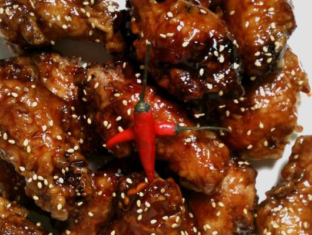

Korean Extra Crispy Fried Chicken w Sweet
Spicy Glaze

About
Here is yet another Korean fried chicken recipe that we
made recently with a sweet & spicy glaze. We have been
yearning for sometimes hot and spicy and we finally got
it. The extra heat came from using Thai chili pepers(aka
Bird's eye chili peppers) that we found at the local Asian
market. These cute, little peppers are quite deceiving,
measuring anywhere between 25'000 to 50'000 in
Scoville Units.
Ingredients
- 24 chicken wings, cut into 3 pieces and tips discarded
- canola oil, for frying (peanut oil if avaliable)
- 2 cloves garlic (or garlic powder)
- 1 cup soy sauce
- 3,4 Thai chili pepers, deseeded and finely minced
- 2 tbsp ketchup
- 1,2 tbp rice vinegar(or cider vinegar)
- 3 tbsp brown sugar
- 1 tsp sesame oil
- 1 tbsp honey
- 2 cups cornstarch(1 cup coating, 1 cup for batter)
- 1 cup water
- 1/2 tsp salt and pepper
- sesame seeds (garnish)
Preperation
-
Cut and discard the end tip of each chicken wing. cut remaining
pieces in half at the joint to create 2 pieces. Rinse pieces under cold
water and set to dry for at least 10 minutes. In a heavy pot such as
a dutch oven, pour in canola or peanut oil to a depth of 3 inches.
Heat over medium-high for about 15 minutes or until ready for
frying.
-
In the meantime, combine sauce ingredients of soy, vinegar,
sugar, honey, ketchup, sesameoil, Thai chili peppers, and the
seasoning in a small sauce pan. Boil until sauce slightly thickens
and then set at low heat. Adjust the spiciness/sweetness of the
sauce by adding more minced red peppers and/or sugar,
continuously tasting for desired result.
-
In a large mixing mowl, mix 1 cup cornstarch and salt and
pepper. Individually coat each chicken wing pieces with the
cornstarch and set aside.
-
In anothe bowl, whisk the remaining cornstarch and water
together to make a runny, liquid batter. Add each chicken wing
one at a time and coat well. Shake off excess batter and fry the
chicken in batches for about 10~13 minutes, or until golden brown,
then drain on paper towels. Do not overcrowd the pan when frying
each batch.
-
Flavor the wings with a brush or by tossing them all together in a
mixing bowl. Transfer to a serving plate and garnish with sesame
seeds. Enjoy and eat while hot!